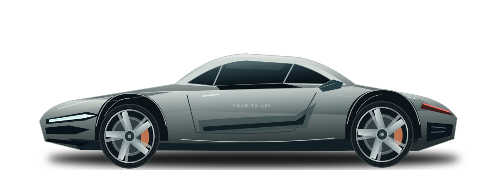

ROAD TO AIR / AN INDEPENDENT STUDY BY KRISH GUPTA
A little air.
A different road.
A car made to fly
meets the world it has to share.
Independent hypothetical study · not affiliated with Tesla · point-mass model

Roads connect us.
What happens
between them?
Most of the journey stays on the ground. This study asks where a brief aerial maneuver could fit—and where it should be declined.
The answer starts with physics, surrounding traffic, and a very limited resource.
Compare the responses ↓02 / SITUATIONS, RESPONSES & CONSEQUENCES
Real situations.
Measured responses.
A sudden brake check. A blocked route. A highway connection.
Each situation has a specific purpose and only the responses relevant to it. Inspect the replay, then the timing, equations and decision below.
B1 FIXED BASELINEPreparing your experiment…
LIVE VIEW / PHYSICS REPLAY
Sudden braking
Inspect the lead vehicle, available braking gap and proposed climb corridor.
DECISION TRACE
Ground travel
Calculating event timings and maneuver gates…
03 / THE CAPABILITY IS FINITE
Seconds are
only part
of the story.
Airborne time and usable impulse are separate ledgers. A maneuver needs enough of both, with a mandatory completion reserve.
AFTER THE SELECTED REPLAY
10-second cap remain
of the configured 125.0 remain
Select a scenario and response to inspect the remaining resource state.
Fixed B1 study assumptions. These are not certified Tesla specifications. The 10 s cap is not the practical limit: at 125 kN·s, holding 1,900 kg off the ground costs about 18.6 kN·s per second, so one flight tops out near 6 s (113 kN·s plus the 12 kN·s completion reserve). Impulse binds before time does.
04 / WHEN IS IT WORTH SPENDING?
The same capability.
Different reasons to use it.
SUDDEN BRAKING AHEAD
A brake check.
A shrinking gap.
The car ahead brakes abruptly. Compare braking, a steering corridor and an aerial request against the time and space available. Aerial assistance must still pass its own gates.
Explore the tradeoffs in the model ↗05 / COMPARE THE CONSEQUENCES
Every departure
is a decision.
Same seed, destination and scripted external event. Background reactions may differ. Aerial assistance uses a forecast; no road user is remotely cleared. Compare remaining capability and recorded conflicts, not a presumed safety advantage.
Inspect the complete matched results ＋
| Policy | Scenario result | Progress | Route | Air used | Impulse used | Denied | Hard brakes¹ | Overlaps¹ | Ego result |
|---|
¹ All modeled vehicles. Occupied-volume overlaps and hard braking are simulation conflict indicators, not crash probabilities. A stopped route may remain incomplete at the 28 s horizon.
06 / WHEN DOES THE FLIGHT HELP?
The same event.
Every following gap.
The lead car brakes at 8 m/s² while both cars travel at the chosen speed. Each column below replays that event twice through the full simulation, once with ground braking and once with an aerial request, changing only the initial gap. It uses the engineering assumptions in the scenario settings above.
Read this first. Everywhere the flight beats braking in this sweep, the gap is a tailgating distance: a fraction of a second behind the lead car, against the usual two-second rule. The study shows what the hardware could do in that situation. It is not a recommendation to follow that closely.
Scroll here to run the sweep.
The assumptions have changed since this sweep.
What the sweep shows
Point-mass model. The result says nothing about attitude control, the jet plume on the vehicle below, sensing uncertainty or a real driver. A flight that clears the lead in this model is not a claim that it is safe.
Inspect every gap ＋
07 / INSIDE THE MODEL
The numbers
get a say.
Advanced notebook for same-heading hops at full resources. The 90° elevated-highway candidate is calculated in its scenario report above. Traffic, attitude and jet footprint require separate gates.
08 / KEEP THE EVIDENCE IN VIEW
The decision needs evidence.
Every time.
Public information and explicit assumptions make this study inspectable. They don’t establish real-world safety, certification or permission to fly.